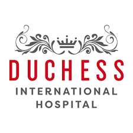

Search
Duchess International Hospital
22A, Joel Ogunnaike St, Ikeja GRA, Ikeja, Lagos
ABOUT A PRIVATE HOSPITAL....

MORE ABOUT THEM...
HOSPITALIZATION
The human relationship is fundamental, the patient receives the utmost attention, the best care for the best result, adapting it to the initial state of health.
All this is linked to the concept of quality and above all to the quality of the service, in understanding and meeting the real expectations of patients and their families.